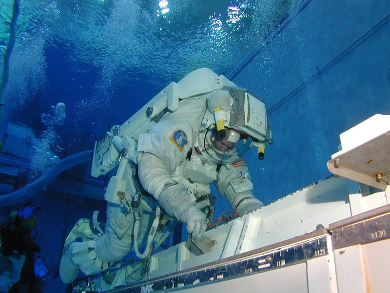

The sun and earth orbit each other, or more precisely, they both orbit around their combined center-of-gravity,
a point called a Barycenter - Wikipedia.
The barycenter for the sun/earth system is very close to the center of mass of the sun itself, so the sun’s orbital
period around it is barely perceptible.
The sun is ALSO orbiting the barycenter of every other object that orbits it (all the other planets, asteroids, comets,
dust specks, etc). Trying to predict the sun’s motion in this environment has eluded us, and many consider it an impossible
problem to solve:
Also read:
Long link
For example I ask you does the sun set u say yes does that mean you’re not agreeing to the rotation ?
The earth resolves around the sun when the earth moves from the sun point there it does the metaphysical sajda and it doesn’t
need to get out of its way as for the story of Joshua it is meant by the light so the sun keeps its light at this particular
point.
Refutation 4: Scholars are not free from doing mistakes, because what they say is from there ijtahad,
and since the evidences are not strong and has been detailed in the top, we can’t just conclude that Islam believes that.
And in case you didn’t know some scholars did approve that earth orbits the sun or say that there is no clear evidence like:
Here sheikh Albani رØمه الله approves it: https://youtu.be/zEMJhBwITZ8
Here sheikh Uthman Al khamees ØÙظه الله the student of sheikh Uthaymeen رØمه الله said: https://youtu.be/GgUijMq30YQ
Sheikh Khalid Al Muslih: https://youtu.be/LNkPvqlnBzc
Sheikh Abdullah Al Muslih: https://youtu.be/ybfZMgWNuTk
Also read:
Long link
SAHIH INTERNATIONAL
And it is He who created the night and the day and the sun and the moon; all [heavenly bodies]
in an orbit are swimming.
Al-Qortoby Tafsir:
“كل يعني من الشمس والقمر والنجوم والكواكب والليل والنهار في فلك يسبØون أي يجرون ويسيرون بسرعة ÙƒØ§Ù„Ø³Ø§Ø¨Ø في الماء”
Translation:
“(Kul) means, from the sun, the moon, the stars, the planets, the night and the day, they swim in an orbit, i.e. they run and
move fast like a swimmer in water.”
I find something fascinating about this verse…
If you search up in google “NASA Training” you’d find that astronauts who go out to space train under water:


 Doesn’t that fit what is described in the verse (يسبØون) floating ?
Allah says in (Quran 21:33)
And it is He who created the night and the day and the sun and the moon; all in an orbit are swimming.
It should be noted that the verse does not say the sun orbits around the Earth, as some Atheists claim.
The verse said that those created galaxies orbit, and stopped. It did not specify what they orbit around.
Therefore, it would be such a shameful act if you add your own words to the verse.
What did the interpreters of the Quran say regarding this verse?
Qutadah (60 AH - 117 AH) says
They move fast in an orbit in the universe
Mujahid Ibn Jabr (21 Ah - 104 Ah) says about the word {swimming}
They move fast
Ibn Zaid as well as Al Tabari (224 AH - 310 AH) said the same thing.
The interpretation of this is the following, why wouldn’t we take it literal ?
Because if we do that we’ll be obliged to take 18:86 as literal and we know the vast majority of scholars,
and any person who hears this wouldn’t take it as literal the movement of this here is related to your eyesight.
The hadith of sun locking for joshua
Ibn Ḥajar al-ʿAsqalānī (d. 852 AH)
« Different opinions emerged regarding the sunset here. Some said: "It withdrew gradually," others said: "It stood still," and some said: "Its movement slowed down." All of these possibilities are plausible, but the third option is more likely according to Ibn Batal and others. »
•📕 [Fatḥ al-Bārī | 3124]
If the suns movement became slower this would cause the earths orbit to become slower so it still doesn’t negate our position.
Is the earth stationary
No the earth isn’t stationary, there is no ijma’ on this even if there was it would still be permissible to reject it.
Prominent figures like ibn taymiayh say the earth is moving as he mentioned in his response to al-razi in bayan Talbis al-Jahmiyah, so did Al-‘Uthaymin as he mentioned in his tafsir of 18:86.
Doesn’t that fit what is described in the verse (يسبØون) floating ?
Allah says in (Quran 21:33)
And it is He who created the night and the day and the sun and the moon; all in an orbit are swimming.
It should be noted that the verse does not say the sun orbits around the Earth, as some Atheists claim.
The verse said that those created galaxies orbit, and stopped. It did not specify what they orbit around.
Therefore, it would be such a shameful act if you add your own words to the verse.
What did the interpreters of the Quran say regarding this verse?
Qutadah (60 AH - 117 AH) says
They move fast in an orbit in the universe
Mujahid Ibn Jabr (21 Ah - 104 Ah) says about the word {swimming}
They move fast
Ibn Zaid as well as Al Tabari (224 AH - 310 AH) said the same thing.
The interpretation of this is the following, why wouldn’t we take it literal ?
Because if we do that we’ll be obliged to take 18:86 as literal and we know the vast majority of scholars,
and any person who hears this wouldn’t take it as literal the movement of this here is related to your eyesight.
The hadith of sun locking for joshua
Ibn Ḥajar al-ʿAsqalānī (d. 852 AH)
« Different opinions emerged regarding the sunset here. Some said: "It withdrew gradually," others said: "It stood still," and some said: "Its movement slowed down." All of these possibilities are plausible, but the third option is more likely according to Ibn Batal and others. »
•📕 [Fatḥ al-Bārī | 3124]
If the suns movement became slower this would cause the earths orbit to become slower so it still doesn’t negate our position.
Is the earth stationary
No the earth isn’t stationary, there is no ijma’ on this even if there was it would still be permissible to reject it.
Prominent figures like ibn taymiayh say the earth is moving as he mentioned in his response to al-razi in bayan Talbis al-Jahmiyah, so did Al-‘Uthaymin as he mentioned in his tafsir of 18:86.